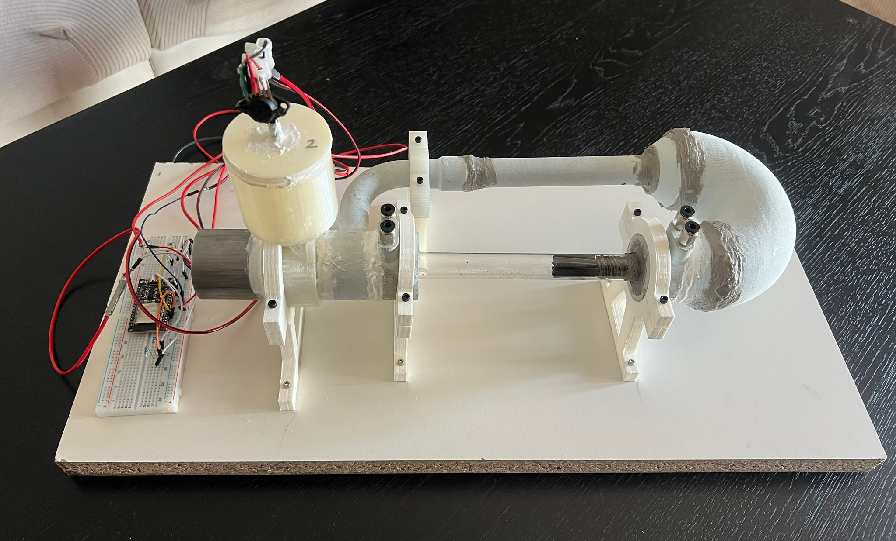

¿Qué es este proyecto?
Este PFG consiste en el desarrollo de un sistema de monitorización en tiempo real para un motor termoacústico mediante sensores conectados a la nube a través de la plataforma Adafruit IO.
Objetivo
Además de construir el motor y conseguir que funcione correctamente, el objetivo principal es supervisar la potencia que genera el motor en base a los datos recogidos por los sensores de presión. De este modo se puede estudiar el comportamiento del motor analizando la evolución de las presiones internas en dos puntos del sistema, permitiendo caracterizar su funcionamiento y optimizar su rendimiento.
Tecnología
Los datos se recogen mediante dos sensores de presión, se transmiten a Adafruit IO y se visualizan en este dashboard web desarrollado con HTML, CSS y JavaScript puro junto con Chart.js para las gráficas.